1)首先你 需要下载SDL头文件和二进制文件。
你可以在SDL的官方网站上找到它们， 点此进入下载页.
向下滚动到Development Libraries部分，下载Windows开发包。

打开zip压缩包，里面应该有一个文件夹。
将这个文件夹拷贝到你喜欢的任意地方。在本教程中，我把它放在C:\根目录
2)启动Visual Studio并新建一个空工程：
3)打开项目的属性窗口，先在左侧单击VC++目录， 然后在右边单击Include目录，此时右侧会出现一个按钮：
单击这个按钮，然后点击编辑：
4)单击文件夹图标，会出现新的一行和新的按钮，现在单击这个新出现的按钮：
5)现在选择你解压出来的SDL目录中的 “Include”文件夹：
然后点击OK。
6)然后按照相同的方式添加“library”文件夹：
7)展开左侧链 接器，单击里面的输入选项，编辑右侧的附加依赖项：
8)在附加依赖项窗口中添加下列内容：
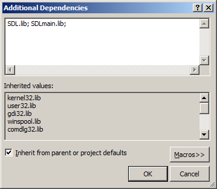
9)接下来，先在左侧单击系统选项，然后将右侧的子系统设置为“Windows窗体程序”：
10)在工程里添加一个新的源文件：
11)现在，将下面的代码粘贴到新建的源文件中：
你可以在SDL的官方网站上找到它们， 点此进入下载页.
向下滚动到Development Libraries部分，下载Windows开发包。
打开zip压缩包，里面应该有一个文件夹。
将这个文件夹拷贝到你喜欢的任意地方。在本教程中，我把它放在C:\根目录
2)启动Visual Studio并新建一个空工程：
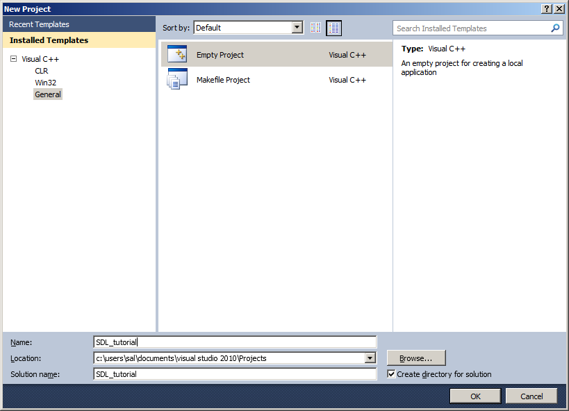
3)打开项目的属性窗口，先在左侧单击VC++目录， 然后在右边单击Include目录，此时右侧会出现一个按钮：
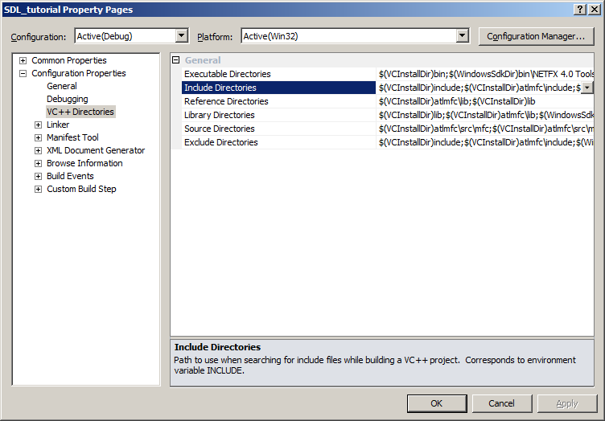
单击这个按钮，然后点击编辑：
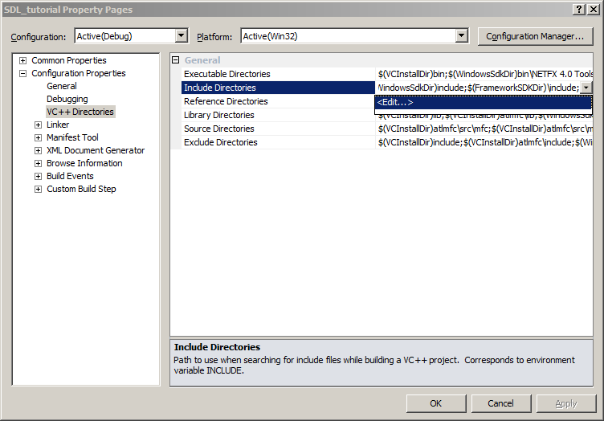
4)单击文件夹图标，会出现新的一行和新的按钮，现在单击这个新出现的按钮：
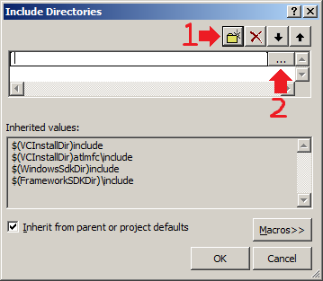
5)现在选择你解压出来的SDL目录中的 “Include”文件夹：
6)然后按照相同的方式添加“library”文件夹：
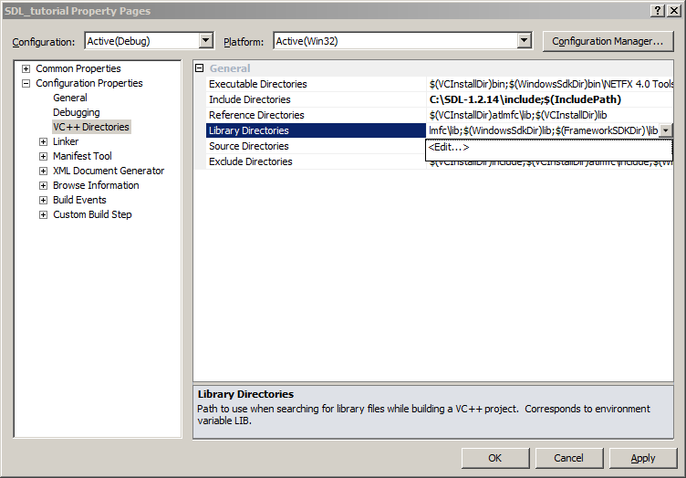
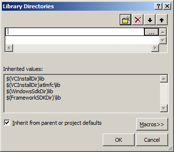
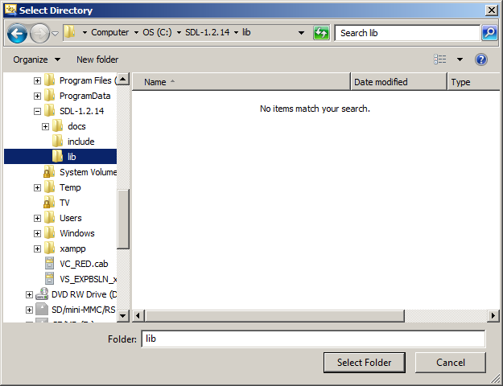
然后单击OK。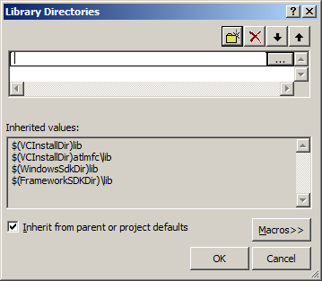
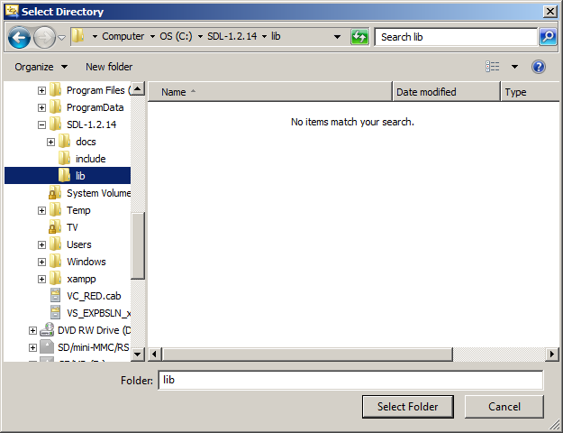
7)展开左侧链 接器，单击里面的输入选项，编辑右侧的附加依赖项：
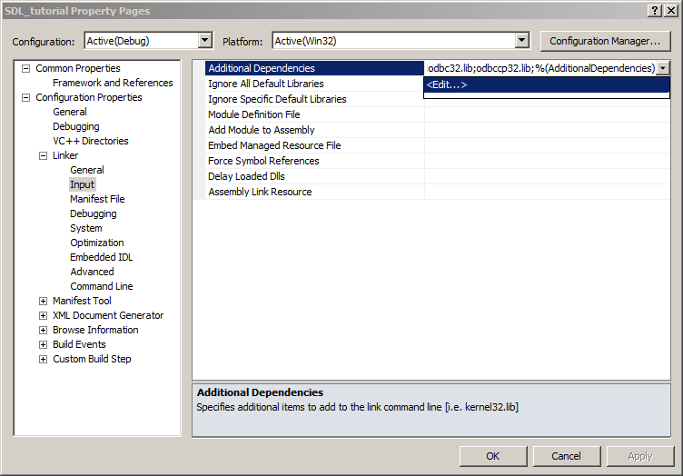
8)在附加依赖项窗口中添加下列内容：
SDL.lib; SDLmain.lib;
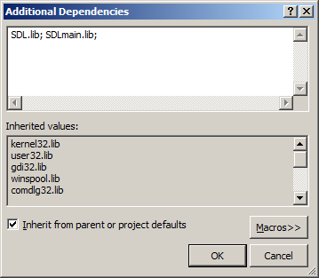
9)接下来，先在左侧单击系统选项，然后将右侧的子系统设置为“Windows窗体程序”：
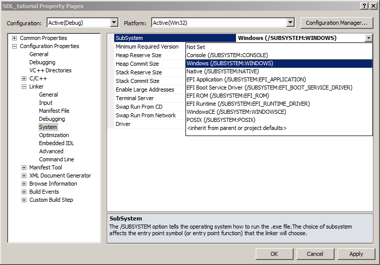
10)在工程里添加一个新的源文件：
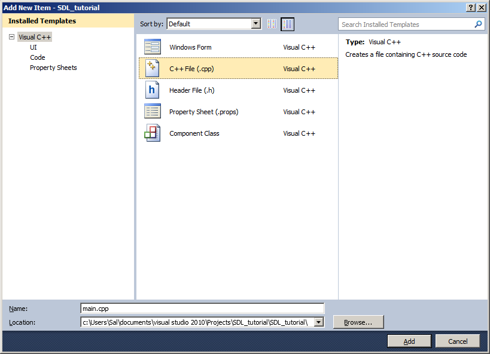
11)现在，将下面的代码粘贴到新建的源文件中：
#include "SDL/SDL.h"
int main( int argc, char* args[] )
{
//Start SDL
SDL_Init( SDL_INIT_EVERYTHING );
//Quit SDL
SDL_Quit();
return 0;
}
12)在左侧选择C/C++ 下面的代码生成，然后在右侧设置运行时库为 “多线程DLL”：
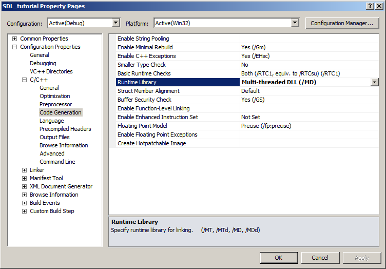
13)现在开始编译，如果没有出错，你就成功了，否则，请查看前面的步骤，确保没有跳过任何一步。 在你能运行这个SDL程序前（虽然这个程序不会显示任何图形界面），你需要从下载的压缩包中解压出SDL.dll（应该位于“lib”子目录下），并在编译完成后，将它和编译生成的exe放在同一个目录中。
另外，你也可以将SDL.dll拷贝到 “C:\WINDOWS\SYSTEM32”目录下，这样虽然SDL.dll与你的SDL程序不在同一个目录下，但程序仍能找到它。当然，如果你在使用64位的Windows系统，你就得把dll放于“C:\Windows\SysWOW64”目录中。
可是，这样处理存在一个问题：如果你有多个使用不同版本SDL库的应用程序，这会导致版本冲突。 如果你将SDL 1.2.8放于System32中，而应用程序使用的是1.2.13，这必然会导致问题。通常情况下，你需要把SDL.dll和你开发的可执行程序放在同一个目录下，并且当你发布你的应用程序时，你总是需要将SDL.dll与exe放在同一个目录下。